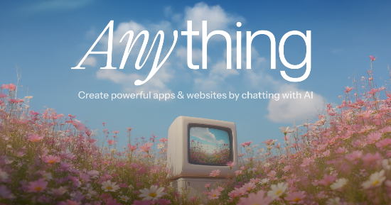

I used ChatGPT to get me started, and it had a couple of hiccups along the way. For some reason I had to enter the Python code line by line in the IDE — when I pasted the whole thing at once, it choked on lines like “import tkinter” and “import random.” Then I had to make sure the input file, quotes.txt, was sitting in the right folder.
From there I tried turning the program into an executable so it'd be easier to use. Pyinstaller wouldn't cooperate — it didn't like tkinter, since that's a GUI call of sorts. I tried AI's suggestion to switch the output to non-GUI, which is around where I saw the whole contents of quotes.txt get dumped straight into the command line. My last attempt was putting the app online as a web page through PythonAnywhere, and I think it did roughly the same thing. Going to keep poking at it.
I'd love to eventually turn it into some kind of Bible app — even something as simple as a Bible verse screensaver. Great idea, if I can get the plumbing to cooperate.
Did I ever share the other app I built? d-side.created.app

Comments